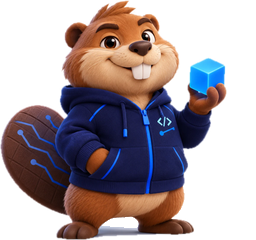

01 · Enterprise AI
Reliable AI search for regulated knowledge.
Structuring fragmented enterprise sources for semantic retrieval, grounded responses, and human verification.
Read case studyChief Technology Officer @ Proteams | AI & Platform Engineering
I am a technology leader with 18+ years of software engineering experience and a strong focus on artificial intelligence. At Proteams, I lead hypercare-enabled platform development for Fortune 500 clients including Microsoft, AstraZeneca, and Novo Nordisk.
My work combines deep AI knowledge with cloud-native architecture to deliver production-grade systems in recognition, geospatial analytics, recommendation engines, and intelligent automation.
I lead with a practical approach: technical depth, clear product thinking, and reliable delivery. My focus is building systems that scale globally while staying deterministic, trustworthy, and operationally sound.
Key domains: AI engineering, cloud-native systems, enterprise architecture, and flexible workforce platforms.
Evidence-backed accounts of applied AI work, written from public information while keeping confidential client and implementation details protected.
01 · Enterprise AI
Structuring fragmented enterprise sources for semantic retrieval, grounded responses, and human verification.
Read case study02 · Consumer AI
Making personal cloud archives searchable through face, object, and location intelligence.
Read case study03 · Agentic Engineering
Six role-based AI workers plan, design, implement, review, and test real product issues, with guardrails, human decisions, and analytics that show where delivery time goes.
Read case study
What six AI workers, seven delivery stages, and one week of analytics showed about builds, decisions, and where engineering time goes.
An interview on closing AI capability gaps, integrating external specialists, and delivering reliable enterprise AI initiatives.
Leading platform strategy and engineering execution for enterprise freelancer team management.
Scaled delivery, architecture, and platform quality for global enterprise workforce operations.
Built high-scale features for Lifebox and Curio including face recognition and geospatial analytics.
Implemented core CRM subscription and lifecycle processes for 34M+ users.
Delivered PSTN service features in CS2K digital telecom switching systems.